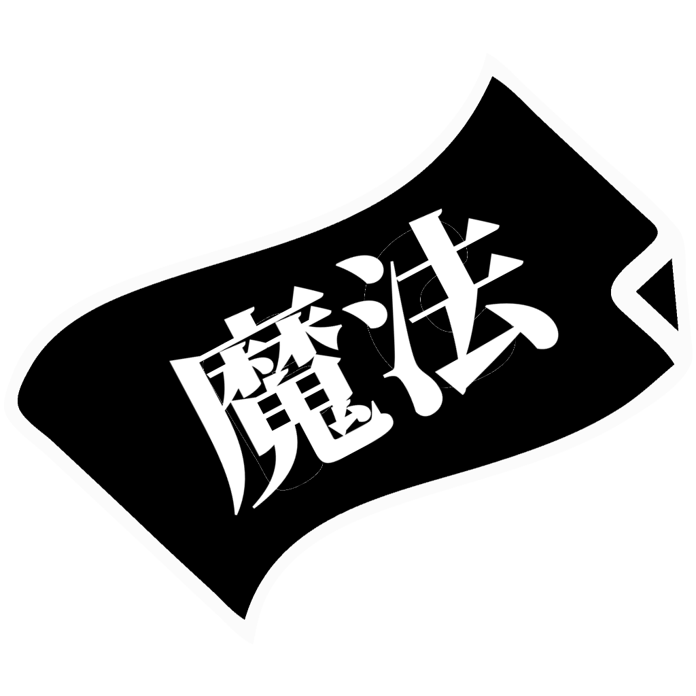

白い熊 魔法絨毯
Version 10
Welcome to 白い熊 魔法絨毯!
Once other options are selected, drag and drop can be used to start a transfer.
Once other options are selected, drag and drop can be used to start a transfer.